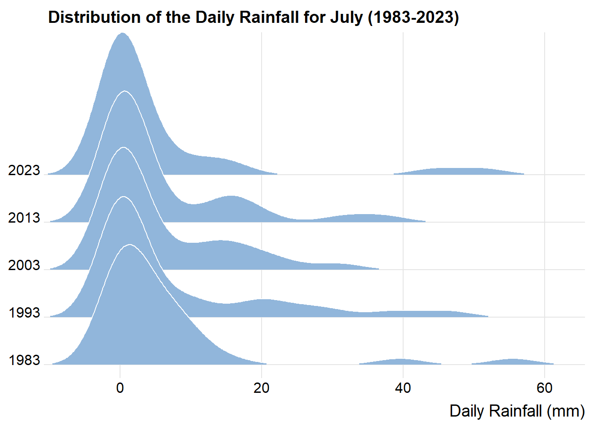
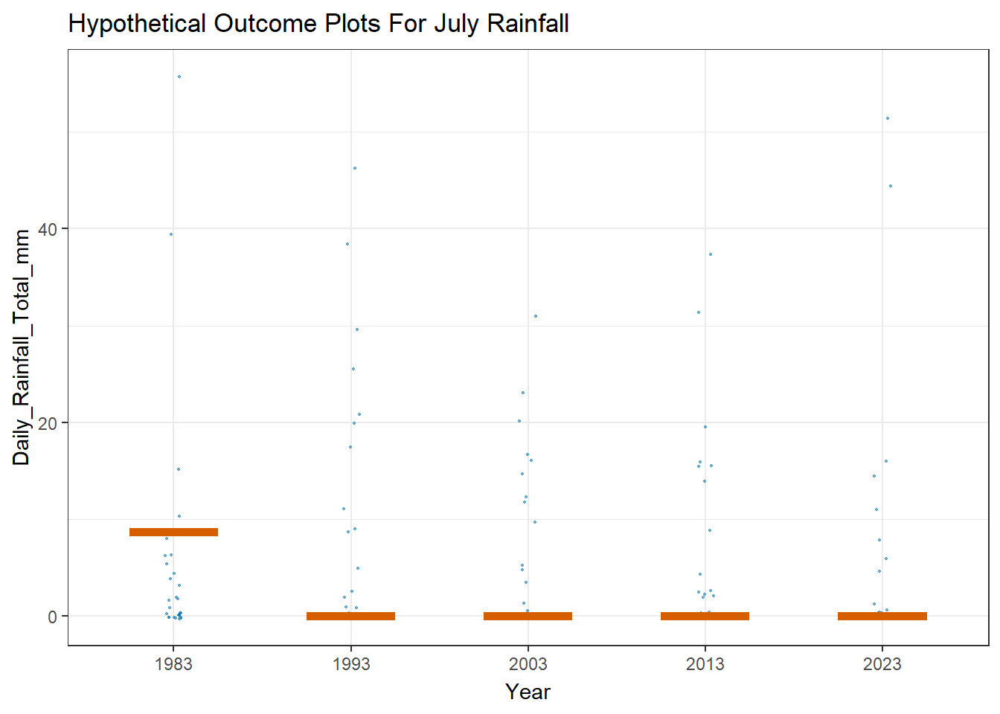
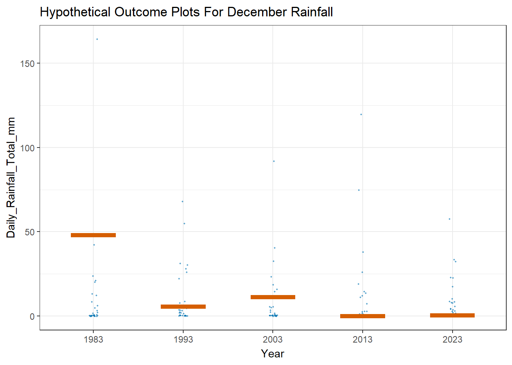

pacman::p_load(ungeviz, plotly, crosstalk, patchwork,
DT, ggdist, ggridges, ggstatsplot,ggthemes,
colorspace, gganimate, tidyverse, dplyr,
readr, ggiraph)Take-Home Exercise 3 - Be Weatherwise or Otherwise
1. Overview
According to an official report as shown in the infographic below,
The contrast between the wet months (November to January) and dry months (February and June to September) is likely to be more pronounced, and
The intensity and frequency of heavy rainfall events is expected to increase as the world gets warmer.

2. The Task
As a visual analytics greenhorn, we are keen to apply newly acquired visual interactivity and visualising uncertainty methods to validate the claims presented above.
In this take-home exercise, I will:
Select a weather station and download historical daily rainfall data from the Meteorological Service Singapore website,
Select rainfall records of a Dry month and a Wet month for the years 1983, 1993, 2003, 2013 and 2023, and
Create an analytics-driven data visualisation and apply appropriate interactive techniques to enhance the user experience in data discovery and visual story-telling.
2.1 Installing and Loading R packages
2.2 Importing Data and Data Preparation
I will download and import data for July (Dry) and December (Wet) for 1983, 1993, 2003, 2013, 2023.
I have chosen Changi weather station, as it is one of the older weather stations with daily rainfall data recorded since 1981. For more information on the weather stations and the historical data available, please refer to this link.
Show the code
# List of file names
December_files <- c("data/DAILYDATA_S24_198312.csv", "data/DAILYDATA_S24_199312.csv",
"data/DAILYDATA_S24_200312.csv", "data/DAILYDATA_S24_201312.csv",
"data/DAILYDATA_S24_202312.csv")
July_files <- c("data/DAILYDATA_S24_198307.csv", "data/DAILYDATA_S24_199307.csv",
"data/DAILYDATA_S24_200307.csv", "data/DAILYDATA_S24_201307.csv",
"data/DAILYDATA_S24_202307.csv")Upon inspecting the csv files for the 5 years, the below columns were removed as they were only recorded since 2014:
Highest 30-min Rainfall (mm)
Highest 60-min Rainfall (mm)
Highest 120-min Rainfall (mm)
I will use the code below to import the csv files into our R environment
# Reading and combining the CSV files for December
December_data <- lapply(December_files, read_csv, col_names = FALSE,
col_select = c(1, 2, 3, 4, 5, 9, 10, 11, 12, 13),
skip = 1) %>%
bind_rows(.id = "file")# Reading and combining the CSV files for July
July_data <- lapply(July_files, read_csv, col_names = FALSE,
col_select = c(1, 2, 3, 4, 5, 9, 10, 11, 12, 13),
skip = 1) %>%
bind_rows(.id = "file")I will use the code below to rename the column names for the data sets.
# Renaming the columns
colnames(December_data) <- c("ID", "Station", "Year", "Month", "Day",
"Daily_Rainfall_Total_mm", "Mean_Temperature_C",
"Maximum_Temperature_C", "Minimum_Temperature_C",
"Mean_Wind_Speed_km_h", "Max_Wind_Speed_km_h")
December_data$Year <- as.factor(December_data$Year)# Renaming the columns
colnames(July_data) <- c("ID", "Station", "Year", "Month", "Day",
"Daily_Rainfall_Total_mm", "Mean_Temperature_C",
"Maximum_Temperature_C", "Minimum_Temperature_C",
"Mean_Wind_Speed_km_h", "Max_Wind_Speed_km_h")
July_data$Year <- as.factor(July_data$Year)2.2.1 Inspecting the data for July
I will use the datatable() function to inspect the data set for July in an interactive way.
DT::datatable(July_data, class= "compact")2.2.2 Inspecting the data for December
I will use the datatable() function to inspect the data set for December in an interactive way.
DT::datatable(December_data, class= "compact")3. Visualising Daily rainfall from 1983 to 2023
Since our data sets do not have any missing values and duplicates, I will proceed to explore the data visually.
3.1 Visualising Daily Rainfall for the month of July (Dry month) over the years
First, I will use the code below and ggplotly to plot an interactive line plot that compares daily rainfall in July over the 5 years.
Show the code
p_july <- ggplot(July_data, aes(x = Day, y = Daily_Rainfall_Total_mm, color = Year)) +
geom_line() +
facet_wrap(~Year, ncol = 1) +
labs(title = "Daily Rainfall in July by Year",
x = "Day of the Month",
y = "Rainfall (mm)",
color = "Year") +
theme_minimal() # Optional: Adds a minimalistic themeggplotly(p_july)I will also use gganimate to create the transition through days.
Show the code
p_july1 <- ggplot(July_data, aes(x = Day, y = Daily_Rainfall_Total_mm, group = Year, color = Year)) +
geom_line() +
facet_wrap(~Year, ncol = 1) +
labs(title = "Daily Rainfall in July by Year: Day {frame_along}",
x = "Day of the Month",
y = "Rainfall (mm)",
color = "Year") +
theme_minimal() +
transition_reveal(Day) + # Animate the line drawing across days
ease_aes('linear')
# Animate and display the plot
animate(p_july1, nframes = 31, fps = 5, width = 800, height = 600)
Note
From the plots above, there seems to be some difference in the daily rainfall for the month of July across the years, in terms of number of rain days and rainfall intensity.
For example, 2023 seemed to have more “heavy” rainfall events relative to previous years, albeit with a lesser number of rain days.
3.2 Visualising Daily Rainfall for the month of December (Wet month) over the years
First, I will use the code below and ggplotly to plot an interactive line plot that compares daily rainfall in December over the 5 years.
Show the code
p_dec <- ggplot(December_data, aes(x = Day, y = Daily_Rainfall_Total_mm, color = Year)) +
geom_line() +
facet_wrap(~Year, ncol = 1) +
labs(title = "Daily Rainfall in December by Year",
x = "Day of the Month",
y = "Rainfall (mm)",
color = "Year") +
theme_minimal() # Optional: Adds a minimalistic themeggplotly(p_dec)I will also use gganimate to create the transition through days.
Show the code
p_dec1 <- ggplot(December_data, aes(x = Day, y = Daily_Rainfall_Total_mm, group = Year, color = Year)) +
geom_line() +
facet_wrap(~Year, ncol = 1) +
labs(title = "Daily Rainfall in December by Year: Day {frame_along}",
x = "Day of the Month",
y = "Rainfall (mm)",
color = "Year") +
theme_minimal() +
transition_reveal(Day) + # Animate the line drawing across days
ease_aes('linear')
# Animate and display the plot
animate(p_dec1, nframes = 31, fps = 5, width = 800, height = 600)
Note
From the plots above, there seems to be some difference in the rainfall for the month of December across the years, in terms of number of rain days and daily rain intensity.
For example, among the 5 years, the heaviest rainfall event happened in 1983. Additionally, the intensity of “heavy” rainfall events in 2023 seemed to be the weakest relative to previous years.
3.3 Comparing the difference between July and December Rainfall over the years (Dry Vs Wet month)
First, I will use the code below to combine the July and December data sets.
Show the code
July_data$Month <- 'July'
December_data$Month <- 'December'combined_data <- rbind(July_data, December_data)I will use the datatable() function to inspect the combined data set in an interactive way.
DT::datatable(combined_data, class= "compact")3.3.1 Comparing July and December’s Daily Rainfall
I will use the code below to create an interactive line plot to compare July’s and December’s rainfall over the 5 years.
Show the code
p3 <- ggplot(combined_data, aes(x = Day, y = Daily_Rainfall_Total_mm)) +
# Use geom_line for both months, specifying linetype based on Month
geom_line(aes(color = Year, linetype = Month)) +
facet_wrap(~Year, ncol = 1) +
labs(title = "Daily Rainfall in July and December by Year",
x = "Day of the Month",
y = "Rainfall (mm)",
color = "Year",
linetype = "Month") +
theme_minimal() +
guides(fill = guide_legend("Year"), color = guide_legend("Year"),
linetype = guide_legend("Month"))
# Adjust linetype manually for clarity
p_combined <- p3 + scale_linetype_manual(values = c("July" = "dotted", "December" = "solid"))ggplotly(p3) |> config(displayModeBar = FALSE)I will also animate the combined plot of July and December’s Daily rainfall, using gganimate.
Show the code
# Adjusted plot code without geom_area
p_combined_simple <- ggplot(combined_data,
aes(x = Day,
y = Daily_Rainfall_Total_mm,
group = interaction(Month, Year),
color = Year)) +
geom_line(aes(linetype = Month)) +
facet_wrap(~Year, ncol = 1) +
labs(title = "Daily Rainfall in July and December by Year: Day {frame_along}",
x = "Day of the Month",
y = "Rainfall (mm)",
color = "Year",
linetype = "Month") +
theme_minimal() +
guides(color = guide_legend("Year"), linetype = guide_legend("Month"))
# Simplify the animation using transition_reveal for Day
animated_plot_simple <- p_combined_simple +
transition_reveal(Day) +
ease_aes('linear')
# Render the animation
animate(animated_plot_simple, nframes = 31, fps = 5, width = 800, height = 600)
Observation 1
From the visualisations above, while there are visibly more rainy days in December relative to July over the years, there seems to be no substantial increase in the intensity and frequency of heavy rain events from 1983.
For example, the highest recorded daily rainfall event was in December 1983 at 164.4 mm. This has not been eclipsed in subsequent years.
Similarly, the overall volume of rainfall in both July and December 2023 seemed to be the least within the 5 years.
4. Analysing statistical differences between months and years
4.1 Differences between the same months across the years
Our previous visualisations seemed to indicate that there were some differences in the daily rainfall for each of the months, July and December, across the 5 years.
This leads to the hypothesis that there might be a difference between each July or each December from 1983 to 2023.
We will need to validate this statistically and examine if there are any significant statistical differences between the daily rainfall for the same month across the five years.
First, we will need to ascertain the nature of the distribution, whether it is normal or non-normal distributed.
We can first visualise this using ridgeline plots, using the code below.
Show the code
ggplot(July_data,
aes(x = Daily_Rainfall_Total_mm,
y = Year)) +
geom_density_ridges(
scale = 3,
rel_min_height = 0.01,
bandwidth = 3.4,
fill = lighten("#7097BB", .3),
color = "white"
) +
scale_x_continuous(
name = "Daily Rainfall (mm)",
expand = c(0, 0)
) +
scale_y_discrete(name = NULL, expand = expansion(add = c(0.2, 2.6))) +
theme_ridges() +
labs(title = "Distribution of the Daily Rainfall for July (1983-2023)")
Show the code
ggplot(December_data,
aes(x = Daily_Rainfall_Total_mm,
y = Year)) +
geom_density_ridges(
scale = 3,
rel_min_height = 0.01,
bandwidth = 3.4,
fill = lighten("#7097BB", .3),
color = "white"
) +
scale_x_continuous(
name = "Daily Rainfall (mm)",
expand = c(0, 0)
) +
scale_y_discrete(name = NULL, expand = expansion(add = c(0.2, 2.6))) +
theme_ridges() +
labs(title = "Distribution of the Daily Rainfall for December (1983-2023)")
Note
From the ridgeline plots above, we can see that the distribution for both July and December rainfall do not resemble a normal distribution, and that there is a right skewness.
Besides visualising with Ridgeline plots, I will also use the code below to run the Shapiro-Wilk test.
print(shapiro.test(July_data$Daily_Rainfall_Total_mm))
Shapiro-Wilk normality test
data: July_data$Daily_Rainfall_Total_mm
W = 0.61704, p-value < 2.2e-16print(shapiro.test(December_data$Daily_Rainfall_Total_mm))
Shapiro-Wilk normality test
data: December_data$Daily_Rainfall_Total_mm
W = 0.51023, p-value < 2.2e-16From the output of the tests above, the p-value is < 0.05 for both July’s and December’s daily Rainfall. Hence we can conclude that the distribution of data is non-normal and we will need to conduct non-parametric tests.
Our Hypothesis will be as such:
H0: There is no difference between the median daily rainfall for the same month across the 5 years.
H1: There is a difference between the median daily rainfall for the same month across the 5 years.
I will use ggstatsbetween() from the ggstatplot package.
Show the code
ggbetweenstats(
data = July_data,
x = Year,
y = Daily_Rainfall_Total_mm,
type = "np",
mean.ci = TRUE,
pairwise.comparisons = TRUE,
pairwise.display = "s",
p.adjust.method = "fdr",
messages = FALSE
) +
ggtitle("Daily Rainfall for July across the years")Show the code
ggbetweenstats(
data = December_data,
x = Year,
y = Daily_Rainfall_Total_mm,
type = "np",
mean.ci = TRUE,
pairwise.comparisons = TRUE,
pairwise.display = "s",
p.adjust.method = "fdr",
messages = FALSE
) +
ggtitle("Daily Rainfall for December across the years")
Observation 2
In both the tests above, the p-value is above 0.05.
Hence, we have insufficient evidence to reject the Null Hypothesis and can conclude that there is no strong evidence to indicate that there is a difference in the median daily rainfall for the same month across the years.
4.2 Differences between July and December across the years
Our previous visualisations seemed to suggest that there is no substantial differences in the daily rainfall between the months of July and December, across the 5 years.
This leads to the hypothesis that there is no difference between each “July to December” period from 1983 to 2023.
We will need to validate this statistically and examine if there is any strong evidence to suggest that there is indeed a difference in the daily rainfall between the two months (July to December).
Our Hypothesis will be as such:
H0: There is no difference in the median daily rainfall between July and December across the 5 years
H1: There is a difference in the median daily rainfall between July and December across the 5 years
Since we have rain fall data for 5 different years, we will use the grouped_ggbetweenstats() from the ggstatplot package.
grouped_ggbetweenstats(
data = combined_data,
x = Month,
y = Daily_Rainfall_Total_mm,
grouping.var = Year,
type = "np", # for non-parametric
pairwise.comparisons = TRUE,
pairwise.display = "s",
p.adjust.method = "fdr",
output = "plot"
)
Observation 3
In the tests above, the p-value is > 0.05 for the years 1983,1993,2003 and 2013.
However the p-value is < 0.05 for year 2023.
Hence we can reject the Null Hypothesis and can conclude that there is some evidence to suggest that there is some difference in the median daily rainfall between July to December, across the 5 years.
To identify and visualise this difference for the June-December periods, I will use the codes below to plot:
The number of Rain days, and
The mean Daily Rainfall across the years
Show the code
rain_fall_summary <- combined_data %>%
group_by(Year, Month) %>%
summarize(
MeanRainfall = mean(Daily_Rainfall_Total_mm, na.rm = TRUE),
RainyDays = sum(Daily_Rainfall_Total_mm > 0, na.rm = TRUE), # Count days with rain
.groups = 'drop'
)Show the code
ggplot(rain_fall_summary, aes(x = Year, y = RainyDays, group = Month, color = Month)) +
geom_line() +
geom_point() +
labs(title = "The largest difference in the number of Rain Days between\nJuly and December was in 2023",
x = "Year",
y = "Number of Rainy Days",
color = "Month") +
theme_minimal() +
theme(legend.position = "right")
Show the code
ggplot(rain_fall_summary, aes(x = Year, y = MeanRainfall, group = Month, color = Month)) +
geom_line() +
geom_point() +
labs(title = "Both July's and December's mean Daily Rainfall have\ntrended lower over the Years",
x = "Year",
y = "Mean Daily Rainfall (mm)",
color = "Month") +
theme_minimal() +
theme(legend.position = "right")
Observation 4
2023 was likely flagged out (p-value < 0.05) over the other 4 years due to:
The difference in the number of rain days between July and December was the highest relative to previous years, and
The mean daily rainfall for both months were the lowest relative to previous years
The infographics had reported that:-
The contrast between wet months (Nov to Jan) and dry months (Feb and June to Sep) is likely to be more pronounced, and
The Intensity and frequency of heavy rain fall events is expected to increase as the world gets warmer.
From our visualisations above:
There has been an increase in rain days in December over the years, and
There has been a decrease in the number of rain rains in July over the years
This may lend credence to the claim that the contrast between Dry and Wet months is likely to be more pronounced.
However, the mean daily rain fall in 2023 for both July and December was at its lowest relative to other years.
Hence, this may not as yet, lend credence to the claim that the intensity and frequency of heavy rain fall events is expected to increase as the world gets warmer.
4.3 Visualising Uncertainty in Daily Rainfall
To visualize the uncertainty in the daily rainfall for both months, I will use the code below to plot jittered scatter plots to visualise the uncertainty of point estimates (daily mean rainfall).
Show the code
July_mean <- July_data %>%
group_by(Year) %>%
summarise(MeanRainfall = round(mean(Daily_Rainfall_Total_mm, na.rm = TRUE), 2))
# Create the ggplot object with tooltips for individual points
p_july <- ggplot(July_data, aes(x = Year, y = Daily_Rainfall_Total_mm)) +
geom_jitter(aes(color = Year, text = paste('Day:', Day, 'Month:', Month)), width = 0.2, alpha = 0.5) +
geom_line(data = July_mean, aes(x = Year, y = MeanRainfall, group = 1),
color = "black", size = 0.5, linetype = "dotted") +
geom_point(data = July_mean, aes(x = Year, y = MeanRainfall),
color = "black", size = 3, show.legend = FALSE) +
labs(title = "Daily Rainfall in July (1983-2023)",
x = "Year",
y = "Rainfall Total (mm)") +
theme_minimal() +
theme(legend.position = "none")
# Convert the ggplot object to a plotly object
p_plotly <- ggplotly(p_july) %>%
layout(hovermode = 'closest') %>%
config(displayModeBar = FALSE)
# Display the plot
p_plotlyShow the code
Dec_mean <- December_data %>%
group_by(Year) %>%
summarise(MeanRainfall = round(mean(Daily_Rainfall_Total_mm, na.rm = TRUE), 2))
# Create the ggplot object with tooltips for individual points
p_decem <- ggplot(December_data, aes(x = Year, y = Daily_Rainfall_Total_mm)) +
geom_jitter(aes(color = Year, text = paste('Day:', Day, 'Month:', Month)), width = 0.2, alpha = 0.5) +
geom_line(data = Dec_mean, aes(x = Year, y = MeanRainfall, group = 1),
color = "black", size = 0.5, linetype = "dotted") +
geom_point(data = Dec_mean, aes(x = Year, y = MeanRainfall),
color = "black", size = 3, show.legend = FALSE) +
labs(title = "Daily Rainfall in December (1983-2023)",
x = "Year",
y = "Rainfall Total (mm)") +
theme_minimal() +
theme(legend.position = "none")
# Convert the ggplot object to a plotly object
p_plotly <- ggplotly(p_decem) %>%
layout(hovermode = 'closest') %>%
config(displayModeBar = FALSE)
# Display the plot
p_plotlyI will also use the code below to plot Hypothetical Outcome Plots for July and December mean daily rainfall.
Show the code
ggplot(data = July_data,
(aes(x = Year, y = Daily_Rainfall_Total_mm))) +
geom_point(position = position_jitter(
height = 0.3, width = 0.05),
size = 0.4, color = "#0072B2", alpha = 1/2) +
geom_hpline(data = sampler(20, group = Year), height = 0.6, color = "#D55E00") +
theme_bw() +
# `.draw` is a generated column indicating the sample draw
transition_states(.draw, 1, 3) +
labs(
title = "Hypothetical Outcome Plots For July Rainfall")
Show the code
ggplot(data = December_data,
(aes(x = Year, y = Daily_Rainfall_Total_mm))) +
geom_point(position = position_jitter(
height = 0.3, width = 0.05),
size = 0.4, color = "#0072B2", alpha = 1/2) +
geom_hpline(data = sampler(20, group = Year), height = 0.6, color = "#D55E00") +
theme_bw() +
# `.draw` is a generated column indicating the sample draw
transition_states(.draw, 1, 3) +
labs(
title = "Hypothetical Outcome Plots For December Rainfall")
In the code below, stat_gradientinterval() of ggdist is used to build a visual for displaying distribution of daily rainfall measurements for July and December by Year.
Show the code
July_data %>%
ggplot(aes(x = Year,
y = Daily_Rainfall_Total_mm)) +
stat_gradientinterval(
fill = "skyblue",
show.legend = FALSE
) +
labs(
title = "Visualising confidence intervals of mean Daily rainfall in July",
subtitle = "Gradient + interval plot")
Show the code
December_data %>%
ggplot(aes(x = Year,
y = Daily_Rainfall_Total_mm)) +
stat_gradientinterval(
fill = "skyblue",
show.legend = FALSE
) +
labs(
title = "Visualising confidence intervals of mean Daily rainfall in December",
subtitle = "Gradient + interval plot")